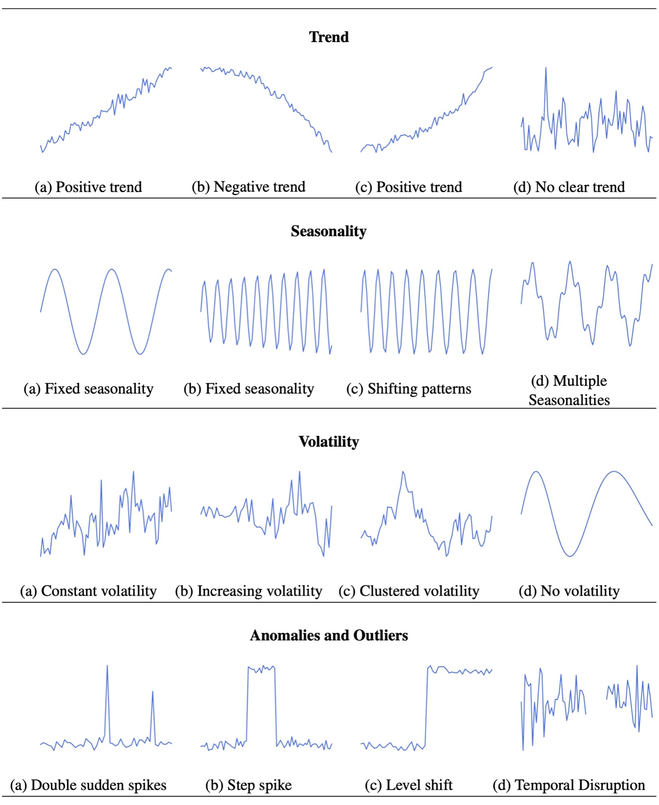
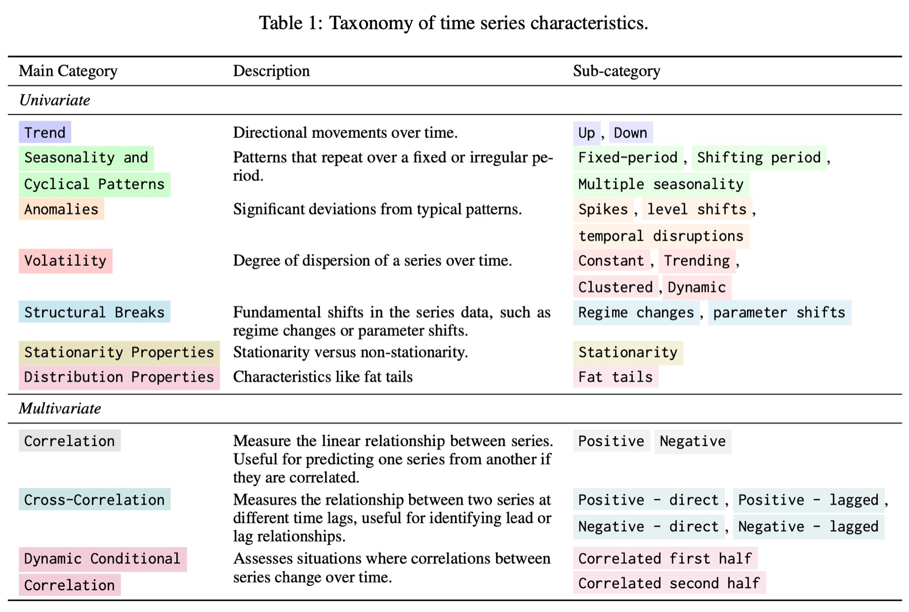
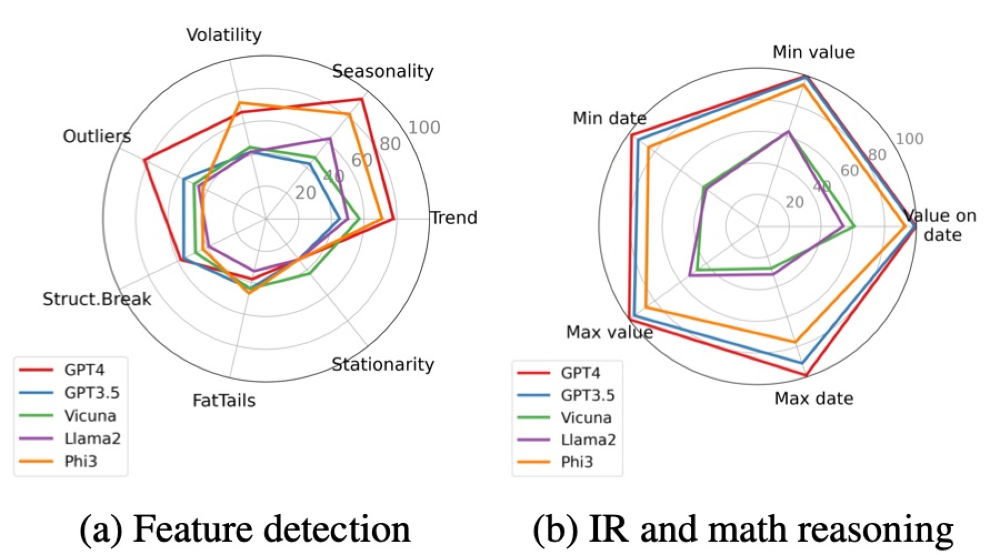

Abstract
Large Language Models (LLMs) offer the potential for automatic time series analysis and reporting, which is a critical task across many domains, spanning healthcare, finance, climate, energy, and many more. In this paper, we propose a framework for rigorously evaluating the capabilities of LLMs on time series understanding, encompassing both univariate and multivariate forms. We introduce a comprehensive taxonomy of time series features, a critical framework that delineates various characteristics inherent in time series data. Leveraging this taxonomy, we have systematically designed and synthesized a diverse dataset of time series, embodying the different outlined features, each accompanied by textual descriptions. This dataset acts as a solid foundation for assessing the proficiency of LLMs in comprehending time series. Our experiments shed light on the strengths and limitations of state-of-the-art LLMs in time series understanding, revealing which features these models readily comprehend effectively and where they falter. In addition, we uncover the sensitivity of LLMs to factors including the formatting of the data, the position of points queried within a series and the overall time series length.
Core contributions
- 1A taxonomyTrend, seasonality, anomalies, volatility, structural breaks, stationarity and fat tails, plus correlations for multivariate series.
- 2A labelled dataset10 synthetic datasets with train, validation and test splits, each series with qualitative and quantitative descriptions.
- 3Five task typesFeature detection, feature classification, information retrieval, arithmetic reasoning and matching series to text.
- 4Five LLMs comparedGPT-4, GPT-3.5, Llama 2, Vicuna and Phi-3, with and without chain-of-thought prompting.
- 5Clear strengths and gapsLLMs read values and trends well, but struggle to classify seasonality and volatility.
- 6Hidden sensitivitiesResults depend on data formatting, series length and where in the series a value sits.
Benchmark
1Taxonomy
We organize time series features by increasing complexity, from trends and seasonality to volatility, anomalies, structural breaks and distribution properties, each with sub-categories. For multivariate series, we add correlation, cross-correlation and dynamic conditional correlation.

2Dataset
For each feature, we generated a synthetic dataset (5,000 training, 2,000 validation and 200 test series) with lengths from 30 to 150 points and daily dates. Each series comes with a qualitative description (for example, “a downward quadratic trend”) and a quantitative one with dates, minimum and maximum.
3Tasks and models
We ask LLMs to detect a feature (is there a trend?), classify it (upward or downward?), retrieve a value on a date, do arithmetic (minimum, maximum and their dates), and match a series to its description. We test GPT-4, GPT-3.5, Llama 2-13B, Vicuna-13B and Phi-3, zero-shot and with chain-of-thought.
Results
1What LLMs understand
- GPT-4 leads: near-perfect on retrieving values and on simple arithmetic, and the best at detecting most features.
- Detecting is easier than classifying: even GPT-4 struggles to say which kind of seasonality or volatility a series has.
- Open models lag: Llama 2 and Vicuna are much weaker even at reading values, while Phi-3 is often close to, or above, GPT-3.5.
| Task (zero-shot) | GPT-4 | GPT-3.5 | Llama 2 | Vicuna | Phi-3 |
|---|---|---|---|---|---|
| Detect trendF1 | 0.79 | 0.45 | 0.51 | 0.58 | 0.72 |
| Detect seasonalityF1 | 0.94 | 0.43 | 0.64 | 0.49 | 0.82 |
| Detect anomaliesF1 | 0.84 | 0.57 | 0.47 | 0.49 | 0.43 |
| Classify trendF1 | 0.98 | 0.78 | 0.43 | 0.53 | 0.48 |
| Classify seasonalityF1 | 0.17 | 0.17 | 0.31 | 0.23 | 0.48 |
| Classify volatilityF1 | 0.18 | 0.07 | 0.12 | 0.15 | 0.08 |
| Value on a dateaccuracy | 1.00 | 0.99 | 0.54 | 0.61 | 0.93 |
| Date of the maximumaccuracy | 0.99 | 0.91 | 0.32 | 0.29 | 0.77 |
Selected rows from Table 2 of the paper, which also reports chain-of-thought results, structural breaks, stationarity, fat tails and multivariate correlations.
Show the radar charts (paper Fig. 2)

2What affects them
- Formatting matters: writing each point as “Date: …, Value: …” helps retrieval and arithmetic; adding up/down arrows helps trend classification.
- Longer series hurt: Llama 2 and Vicuna degrade sharply from 30 to 60 points; GPT-3.5 and Phi-3 degrade slowly.
- Position bias: where a value sits in the series changes accuracy, for GPT models on harder arithmetic tasks and for Llama 2 and Vicuna on all tasks.
- Matching text: GPT-4 matches series to their own descriptions almost perfectly, but much less well across datasets.
BibTeX
@inproceedings{fons2024evaluating,
title = {Evaluating Large Language Models on Time Series Feature
Understanding: A Comprehensive Taxonomy and Benchmark},
author = {Fons, Elizabeth and Kaur, Rachneet and Palande, Soham and
Zeng, Zhen and Balch, Tucker and Veloso, Manuela and
Vyetrenko, Svitlana},
booktitle = {Proceedings of the 2024 Conference on Empirical Methods
in Natural Language Processing},
pages = {21598--21634},
year = {2024},
publisher = {Association for Computational Linguistics},
url = {https://aclanthology.org/2024.emnlp-main.1204}
}